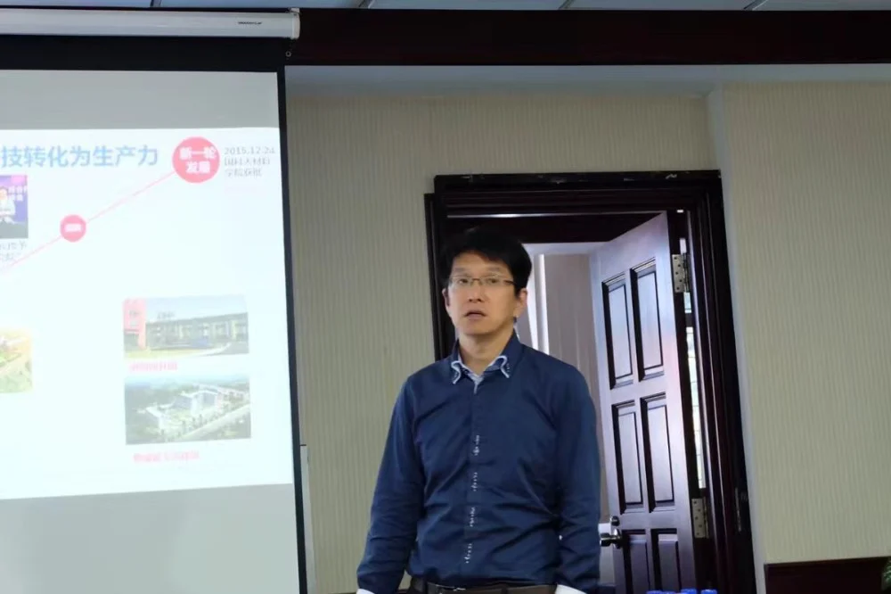
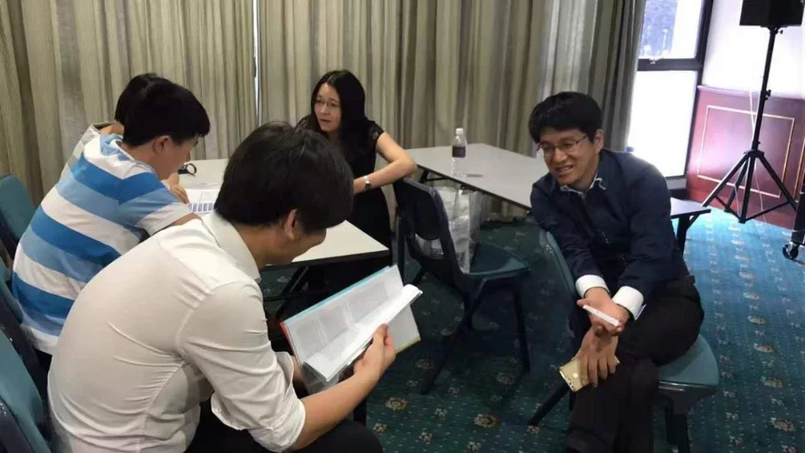

5月29日，中科院宁波材料技术与工程研究所（浙江工业技术研究院）2017年为期5天的新加坡招聘在南洋理工大学拉开帷幕。招聘团由慈溪医工所高级研究员刘江，人力资源部郑晓宇及先进制造所研究员张驰、祝颖丹、陈庆盈、科技主管吴晓飞组成，在新加坡南洋理工大学、新加坡国立大学举办招聘宣讲会，并在2017 IEEE International Conference on Robotics and Automation会场设立展位，开展高层次海外人才的引进交流。此次招聘活动是宁波材料所招聘团继2005年，2012年，2015年以来第四次来到新加坡进行人才引进。
5月31日，招聘团兵分两路，一路继续在ICRA 2017现场，一路到达新加坡国立大学（NUS）举行招聘宣讲。慈溪医工所研究员刘江作为NUS校友作宣讲报告。刘江首先向与会者介绍了工研院的理念使命、人才需求和支持条件。随后刘江详细介绍了慈溪医工所的建所初衷、学科布局、筹建进程、发展目标以及人才需求。刘江坦言，当他第一天来到工研院时，就被工研院围绕人才的服务理念所感动；开展工作以来，被工研院协同创新的文化所感染。刘江用一句“希望在田野上”告诉大家工研院是一所朝气蓬勃的科研院所，她的开放、包容给予了科研人员广阔的发展空间，以此鼓励海外学者积极加盟工研院。
同时在ICRA 2017现场，招聘活动仍在火热进行中。工研院招聘展位不仅吸引了众多海内外学者前来交流，还得到了部分机器人企业的关注，通过与企业代表们的深入交流，也向工业界很好地宣传了工研院在机器人方面研究成果和进展，提高了工研院机器人领域在国际上的知名度。
截止6月1日下午，宁波材料所/浙江工研院2017年新加坡招聘活动圆满收官。通过此次活动，100多位海外学者通过“宁波材料所新加坡招聘交流”微信群与招聘团建立了联系，其中40余位学者与招聘团进行了深入交流，并有6位学者现场投递了简历。此次活动进一步提高了工研院在新加坡的影响力，取得了预期效果。招聘活动得到了新加坡中国学者联合会和ICRA 2017大会组委会的大力支持。

